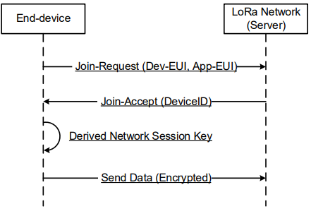

Launch of ICSPACE19 LoRa balloon flight
from the archive
The ICSS balloon group launched ICSPACE19 from Fryent Country park on 17/3/2020. This launch comes more than a month since the last launch and is perhaps the most tested tracker we have launched.
The LoRa radio transmitted using Spreading Factor 8 and 125khz bandwidth.
We have split the world into regions for different LoRaWAN parameters. e.g. EU868, AU915, US915 etc. The regions are graphically shown in the map below.
Update: 20/3/20: A critical bug was discovered in the firmware, breaking the ablity for the tracker to switch LoRaWAN parameters depending on where it is. It is stuck transmitting on EU868 params.
Key Stats
ICSPACE19
balloon: Aliexpress party balloon
payload weight: 6.0g
net lift: 5.0g
float altitude: 7500m
Lifting Gas: Pure BOC GAS helium, accidentally mixed with some air
Updates
Since this flight has become a multi day flight, we will update on the flight as time goes by
Day 1
ICSPACE19 was launched from Fryent Country Park in London. It was launched just before 2pm and there was only around 2-3 hours of sunlight left. It was semi overcast but surprisingly the tracker came to life, indicated by the blinking LED on the tracker.
Launch was flawless, with minimal wind. The tracker GPS did not get a fix until it was over Essex. It transmitted for around 1 hour before going to sleep, with the sun going down on it.
Pre launch photos
These photos show the prestretching process. The balloon was filled to a pressure of 0.625 psi.
Day 2
ICSPACE19 came to life early in the morning and was picked up by gateways over Germany. However, it was transmitting no valid GPS position(only the default position centered in London) and invalid pressure and temperature values. It was transmitting every 46 minutes instead of the 2 minutes it was programmed to do.
After a bit of investigation, it was determined that somehow, the I2C line connecting the GPS and pressure/temperature sensor to the Microcontroller was not working, and NO data was being returned to the microcontroller.
However, we knew that the 46minute interval represented the timeout duration if the GPS did not respond.
The tracker transmitted every 46 minutes and we could localise the tracker using gateway locations.
Day 3
Same issue as the previous day. GPS and Sensor were sending incorrect information and radio was transmitting in 46 minute intervals.
Day 4
The tracker miraculously came to life today, and started sending down valid GPS and sensor data every two minutes. It travelled over Romania and entered Bulgaria. It has achieved a float of 7500m ASL.
Day 5 & 6 & 7
The tracker made a few LoRaWAN join requests through out the days but could not succeed in completeing a join request. It looks like the tracker is successfully sending the Join-Request but is not receiving back the Join-Accept. Perhaps it is because the antenna on the tracker is not very well tuned to receive the data. Hopefully it will still attempt to join tomorrow

Final assembly of trackers
Final assembly of the tracker was done in the Dyson School makerspace where we attached the Solar Cells to the tracker PCB.
Photos of tracker during testing in the Sun
The tracker was taken out to Hyde Park and placed in the sun to test if it works under the sun. It did. Interestingly, once the GPS gets its first fix, it is able to keep the ephemeris data even when shadows fall on the Solar cells.